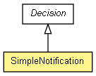

org.apache.wiki.workflow
Class SimpleNotification
java.lang.Object
 org.apache.wiki.workflow.AbstractStep
org.apache.wiki.workflow.Decision
org.apache.wiki.workflow.SimpleNotification
org.apache.wiki.workflow.AbstractStep
org.apache.wiki.workflow.Decision
org.apache.wiki.workflow.SimpleNotification
- All Implemented Interfaces:
- Serializable, Step
public final class SimpleNotification
- extends Decision

Decision subclass used for notifications that includes only one available Outcome:
Outcome.DECISION_ACKNOWLEDGE. The Decision is not reassignable, and
the default Outcome is Outcome.DECISION_ACKNOWLEDGE.
- Since:
- 2.5
- See Also:
- Serialized Form
|
Constructor Summary |
SimpleNotification(Workflow workflow,
String messageKey,
Principal actor)
Constructs a new SimpleNotification object with a supplied message key,
associated Workflow, and named actor who must acknowledge the message. |
| Methods inherited from class org.apache.wiki.workflow.AbstractStep |
addError, addSuccessor, getAvailableOutcomes, getEndTime, getErrors, getMessageArguments, getMessageKey, getOutcome, getOwner, getStartTime, getSuccessor, getWorkflow, isCompleted, isStarted, setOutcome, setWorkflow, start |
| Methods inherited from class java.lang.Object |
clone, equals, finalize, getClass, hashCode, notify, notifyAll, toString, wait, wait, wait |
SimpleNotification
public SimpleNotification(Workflow workflow,
String messageKey,
Principal actor)
- Constructs a new SimpleNotification object with a supplied message key,
associated Workflow, and named actor who must acknowledge the message.
The notification is placed in the Principal's list of queued Decisions.
Because the only available Outcome is
Outcome.DECISION_ACKNOWLEDGE, the actor can only acknowledge the
message.
- Parameters:
workflow - the Workflow to associate this notification withmessageKey - the message keyactor - the Principal who will acknowledge the message
acknowledge
public void acknowledge()
throws WikiException
- Convenience method that simply calls
Decision.decide(Outcome)
with the value Outcome.DECISION_ACKNOWLEDGE.
- Throws:
WikiException - never
isReassignable
public boolean isReassignable()
- Notifications cannot be re-assigned, so this method always returns
false.
- Overrides:
isReassignable in class Decision
- Returns:
false always
Copyright © {inceptionYear}-2014 The Apache Software Foundation. All rights reserved.